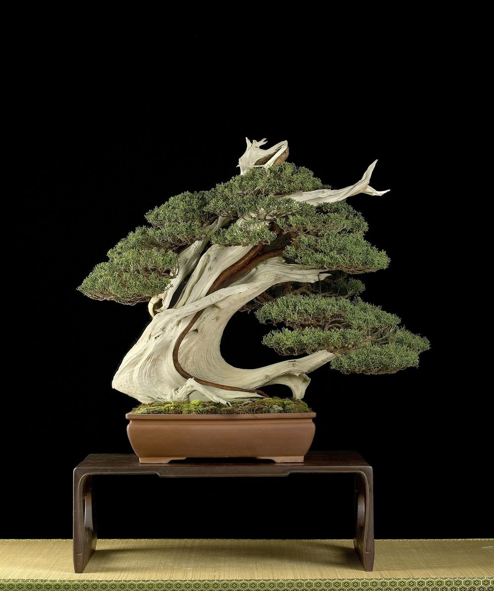

Stata Ined
Graphiques
Programmation
A propos
Marc Thévenin
Formation
Introduction
Chapitre 1: syntaxe
Types et syntaxe
Options: couleur, épaisseur
Options: légende, titre…
Combiner des graphiques
Chapitre 2: macros
Rappels sur les macros
Alleger la syntaxe
Automatiser la programmation
Chapitre 3: palettes et styles
Palettes de couleurs
Styles-thèmes
Chapitre 4: [A venir]
Chapitre 5: [A venir]
Ressources graphiques
Graphiques Stata
Python.qmd

Marc Thévenin
Github
Sms-Ined
Liens Ined
Site de l’Ined
:
Site du Service Méthodes Statistiques
:
Site des Rencontres de Statistique Appliquée
:
Site du séminaire R à l’Usage des Sciences Sociales (RUSS)
:
Autres supports
Formation analyse des durées (2017-2020)
:
https://mthevenin.github.io/analyse_duree/
Formation introduction à Stata (2018): datée - mise à jour en cours